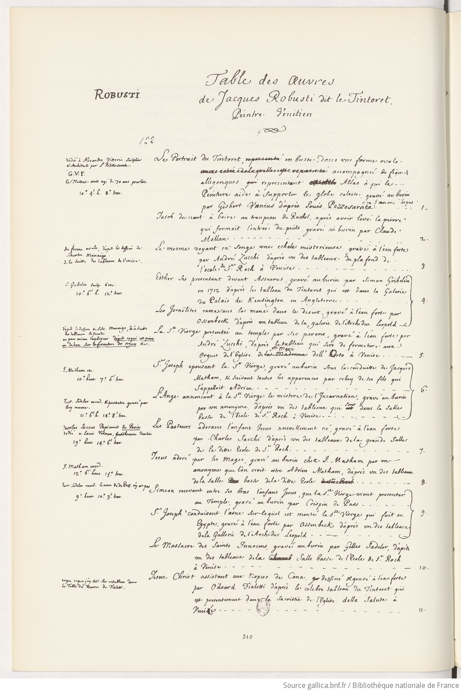

Table des oeuvres de Jacques Robusti dit le Tintoret, Peintre vénitien.

Fac-similé p. 310
Source: Gallica
1Le Portrait du Tintoret (représenté), en buste. dans une forme ovale, accompagné de figures
allégoriques representant Atlas à qui la Peinture aide à supporter le globe
celeste, gravé au burin par Gisbert
Voenius (graveur) d'après Louis Pozzosarata (auteur)
dédié à Alexandre
Vittoria (dedicated) Sculpteur et architecte par L. Pozzosarata (auteur)
G. V. F.
Le Tintoret (représenté) etoit agé de 70
ans pourlon (?) Dimensions: 10.° 4'. h. x 8°. trav.
2Jacob donnant à boire au troupeau de Rachel, après avoir levé la pierre
qui fermoit l'entrée du puits gravé au burin par Claude Mellan (graveur).